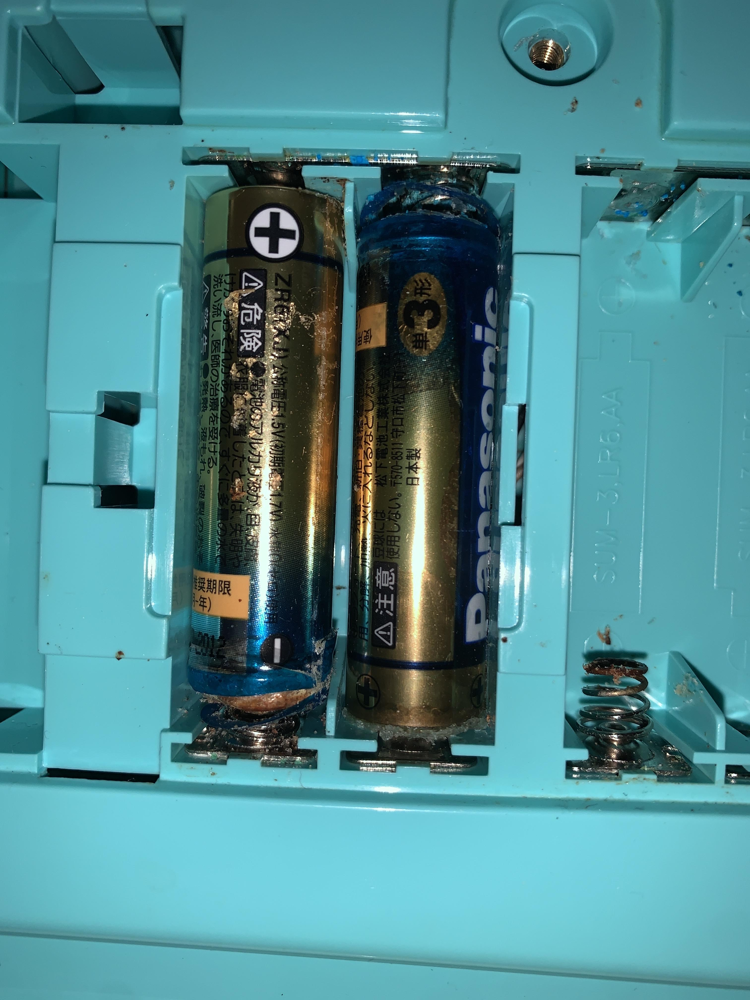
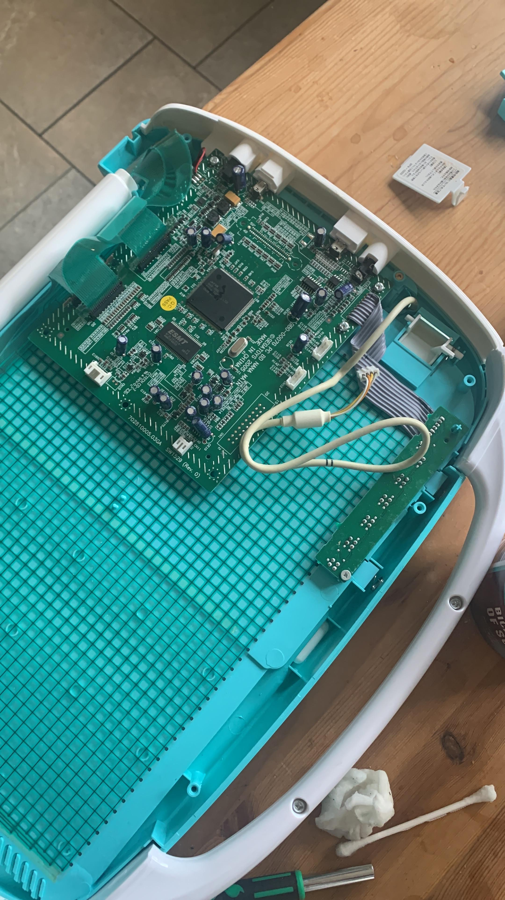
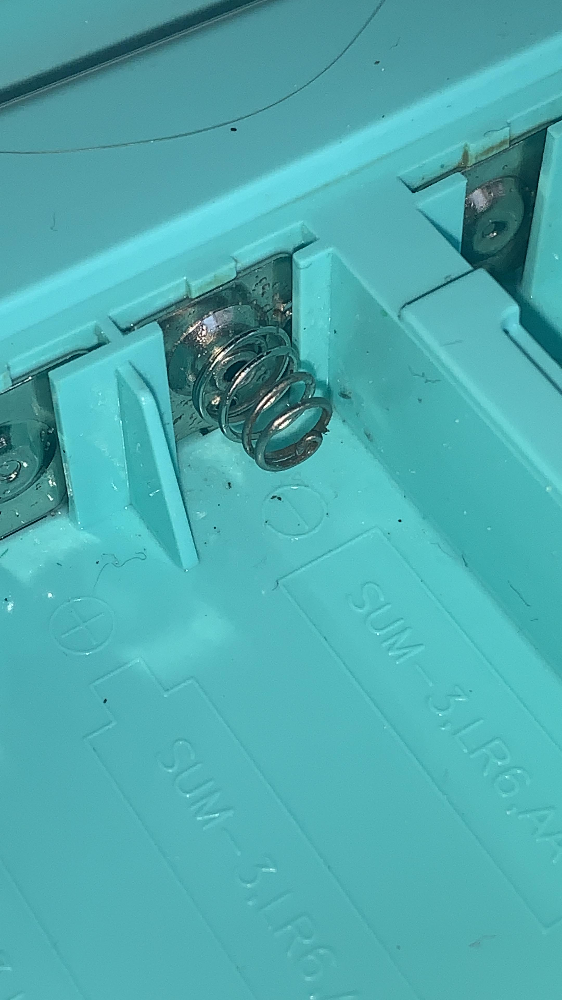
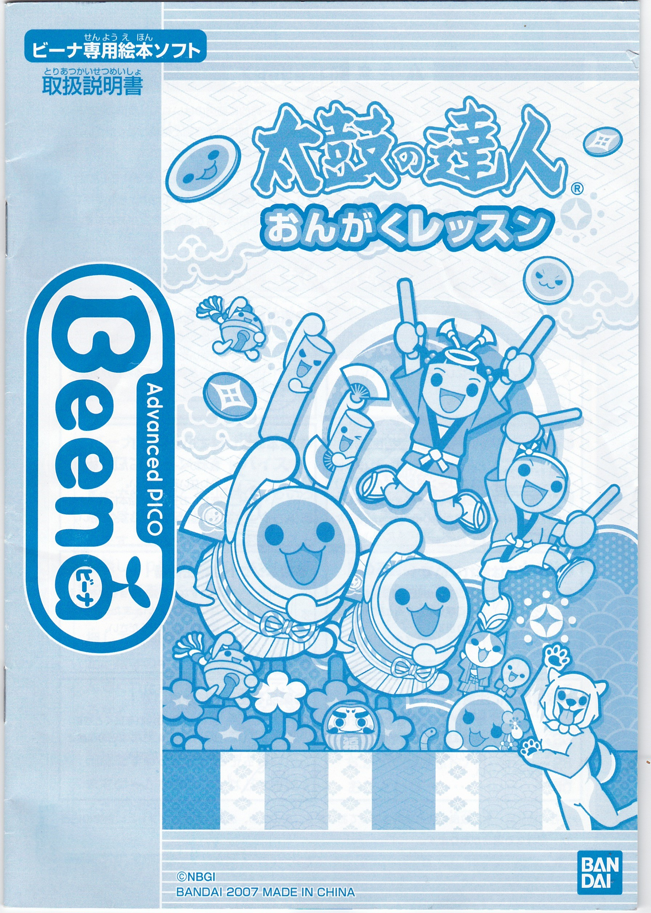

Advanced Pico Beena
overviw
Basically, what I have is the Sega Toys 2005 console "Advanced Pico Beena". Yeah, yeah, the one what Is hard to find.
So, what I did is got the console, and got Taiko no Tatsujin Ongaku Lesson. here are some things.
I got this console on some day in late 2021. It was like a life to me. But only just a year later; I have now put
Songs into the computer file. So have a look at everything! (Ongaku Lesson Songs are here.)
There is a young, fun gallery underneath all of these texts and also the image "Thank you".png. (!)
Also the ripped songs from Taiko no Tatsujin: Ongaku Lesson are here...
Acqucicsition
on a starry night...
Sometime in very early 2022 (I believe around Januart 2nd) I was browsing the top auction service, Yahoo Auctions (Japan Versuib).
Scrolling through the many pages, all I saw was the same-old-same-old. Nintendo Switch game, Wii Game, Ps2 Game lest
for a couple of Soundtrack CDs and maybe irrelevant Arcade items. This was when it struck me; seeing the beauty of the
Advanced pico beena, WITH Taiko no Tatsujin Ongaku Lesson?! I had to get it. So, I had set multiple alarms on my phone
for that day, 2 hours before - 10:30, 1 hour before - 11: 30, 30 Minutes before - 12. I always leave my latest at 30 minutes
before, then set manual timers after that. 10 minute timer (no action on auction? nice. 20 minutes left.). Another 10 minute
timer (STILL no action on auction? Wow. 10 minutes left.) At this point, I monitor the auction religiously - 3 tabs on
my screen - Zenmarket, Buyee and Yahoo Japan. Refreshing every 30 seconds. The timer ticking down. Once the timer ticks to 6
minutes left, I spring into action. "Place a Bid", Zenmarket's beautiful user interface tells me. I check, am I logged in? Yes.
I put in my amount. Since nobody's bidden yet... 2000 yen (minimum amount.). The bid goes through.
I am the leading bidder.
Then, another 5 minutes to go. Anxiously waiting. But nobody bids. "Huh?!" I think to myself. This kind of stuff's shown
up just once ever on here in over 2 years of looking, and nobody's bidden on it?! I check all 3 tabs yet again. 1 Bidder - Me.
The timer ticks down - 10 seconds left.... 5.... 3... 2.. 1. Then, Zenmarket loads up, and I have won the auction.
Back of the net.*
read in heavy british yob accent...
Playing about :3
on a starry night...
When the Pico Beena arrived, it was like a dream to me.. Boxed and all! I open the box, take out the cables and the pico Beena,
and check it out. Since I didn't want to instantly destroy the console, I didn't use the power adapter, instead opting
for the handy option of BATTERIES! However, I was met with unfortunateness when I opened the Beena's battery compartment...
Aah! Battery Corrosion!

In order to combat this, I consulted wizards and concocted a potion to tame the corrosion, what had plagued these lands, lest badnesses happen...
【I also had to open it or the insides would be wettened】
 
These are pictures above of what the inside of the pico beena looks like and stuff..
After this, the Pico Beena started up and worked fine! It was beautiful. After showing this off to everybody what I knew,
I knew what was necessary for me to do. I had to get the songs preserved!
Presreveration...
on a starry night...
Basically, whiles back, I had bought an RCA capture card, but never got round to actually using it. Included with the card
was a tiny little disc which had on it the software that the capture card used, but it never actually installed the software, so
I just gave up. It wasn't really going to come into use anyway.. Until now. So, I unearthed the Capture Card, installed the software,
(after making promises to Taiko Discord Group that they would recieve extensive footage of every song)... and then realised that; alas;:
The capture card software needed a SECURITY KEY??! Oh dear. The security key was in the manual - which I threw away. Fast forward from Jan 2021
to December 25th 2022 and (coincidentally on crismes) I got caputre card and did what was necessary - get the songs off, and also
Multiple people was very happy about this. I pulled 2 all nighters to deliver only the best to my people, and they recieved it very happily...
Gallery of Images of the Sega Pico Beena Console (real life...) :3
on a starry night...
This is Taiko no Tatsujin Ongaku Lesson's front cover and also back cover (scanned!)

Clicking on this image above will take you to a place where you can view high quality scanning of the whole game manual! Omg!